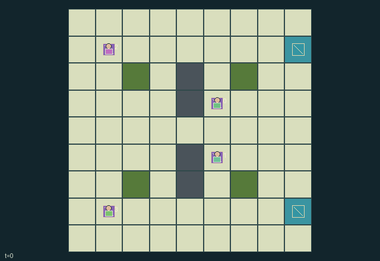

GI137 · Mossline Pursuit

Trackers 0 and 1 cooperate to tag runners before extraction. Runners 2 and 3 cooperate to reach either exit, using hiding, shared-trail erasure and decoys with finite charges.
Identity and original contract
4 independently actionable roles; 11 discrete commands per role; 288 native observation columns per role; original horizon 64 steps. Declared per-step reward range: -2 to 2. Observation regime: partially_observable.
Source SHA-256: 8cc580b11c98d57a0a62af45f3d974279e80f7832ad065e6c0abd03c2e7e1374
The objective, rewards, population, map and horizon remain original. A preview is not a success claim.
Objective and gameplay
Trackers 0 and 1 cooperate to tag runners before extraction. Runners 2 and 3 cooperate to reach either exit, using hiding, shared-trail erasure and decoys with finite charges.
Trace manipulation changes opponent information and can erase a teammate's trail; scans compete with limited tag charges. Tagging changes both teams' reward and removes a runner. Teammates share their active positions and charges but do not automatically share every local scent observation.
- Trackers are roles 0 and 1; runners are 2 and 3. Trackers start at (5,3),(5,5), runners at (1,1),(1,7). Exits are (8,1),(8,7).
- Tracker 0 senses scent within distance 3 and sees within 2; tracker 1 senses scent within 1 and sees within 3. Runners see within 3 and sense scent within 2.
- Teammates share active positions and charge. Opponents in brush or using hide are concealed unless adjacent or revealed by a scan. Fences block motion, not Manhattan sensing.
- Each tick scent decays by one, erasures clear radius one, then ordinary active runners leave strength 4 at their previous cell. Hide or erase suppresses that runner's fresh trace.
- Runners may spend two charge to throw strength-6 false scent two cells in a chosen direction. Targets clamp to the map; a fence target redirects to the runner's current cell.
- Trackers may scan for one charge, increasing visual radius by three for that observation, or use a one-charge stationary adjacent tag sweep. Hide does not prevent physical capture.
- Capture is checked after movement and before extraction. Each captured runner gives both trackers +1 and both runners -1; extraction reverses those rewards.
- Both runners resolved ends play, including mixed outcomes. Opponent locations, opponent charge and distant scent must remain absent from role view.
Ending: Both runners have resolved, each either captured or extracted; mixed outcomes are valid. Otherwise truncate at 64 steps. Capture precedes extraction on the same transition.
Action timing: Masks depend only on own role, own known charge, public active status and joint done. Directional moves are legal attempts, even when blocked. Same-team old occupants and contested destinations block movement; opponents may overlap or cross without automatic capture. Order is movement, decay, all erasures, fresh real/false scent, tag sweep, extraction, visibility refresh. Capture overrides extraction. Inactive runners and terminal states allow only wait.
What this game explores
Information, sensing & communication: Who knows a fact, when it was measured, and whether it was communicated are separate state variables. Test memory or communication using only the same role-visible evidence.
Joint transport & shared access: Positions, load geometry, occupancy and persistent access constrain whose action can succeed next. Distinguish physical handoff, shared controls and simultaneous force from a cosmetic cooperation label.
Team opposition & interception: Cooperation within a team can coexist with opposition between teams. Preserve team membership, capture and possession rules, and report each team's outcomes instead of assuming a single shared return.
These are questions supported by rule structure, not observed learning effects.
Play it: operating walkthrough
crucibles play --game gi137Keep Python running and open its printed address. Select this game, set a seed and press Create session. The game itself is always English.
Assign a role range to Host with Assign / take over, or Assign all roles. Invite a second participant with Create player invitation, then assign a disjoint subset. Every original role is available.
For every owned role choose a legal command and press Queue. Arrow keys / WASD queue a declared directional action for the current role camera when available. Space or Advance one joint step advances everyone together. Non-directional games use the selectors.
Unqueued roles use the labelled untrained uniform-legal policy. Take over or release roles before the next step without resetting. Full-state debug is privileged and permanently logged; role cameras preserve permissions. Close the session to retain logs. Server restart does not restore sessions.
Complete command reference
IDs and English labels exactly match the manifest. Availability depends on role, resources, location and phase. An available action can still have no productive effect.
0·Wait; active runners leave ordinary scent unless hiding/erasing
1·Attempt north
2·Attempt east
3·Attempt south
4·Attempt west
5·Tracker: scan; runner: hide, cost 1
6·Erase scent on current and cardinal-adjacent cells, cost 1
7·Tracker: adjacent tag sweep cost 1; runner: throw north decoy cost 2
8·Runner: throw east decoy cost 2; illegal for trackers
9·Runner: throw south decoy cost 2; illegal for trackers
10·Runner: throw west decoy cost 2; illegal for trackers
Roles and capability identifiers
These original role names describe capabilities, not interchangeable skins. Check each owned role's legal selector before planning handoffs.
agent_0·Tracker 0: nose radius 3, visual radius 2
agent_1·Tracker 1: nose radius 1, visual radius 3
agent_2·Runner 2: visual radius 3, scent radius 2
agent_3·Runner 3: visual radius 3, scent radius 2
Information and observation permissions
Map and resolved status are public. Own-team active positions and charges are shared. Opponents are shown only within native Manhattan vision with brush/hide concealment, close-range or scan exceptions. Scent is local and anonymous; no hidden positions, opponent charges, private actions or full scent field appear in role view.
The GIF is full-state debug and may reveal hidden entities or private state. Train on obs[agent], not the picture, state tree or another role's private row. Field slices and visibility are in the original manifest.
Reinforcement-learning integration
import jax
from crucibles_jaxmarl import make
env = make("gi137")
key = jax.random.PRNGKey(0)
key, rk, ak, sk = jax.random.split(key, 4)
obs, state = jax.jit(env.reset)(rk)
actions = env.sample_actions(ak, state)
obs, state, rewards, dones, info = jax.jit(env.step_env)(sk, state, actions)
done = dones["__all__"]Observations are float32 vectors of width 288; actions are scalar int32; masks have 11 entries. Supply all 4 roles each transition. Masked sampling is an engineering reference, not a trained learner.
step_env retains terminal data without reset. step performs outer autoreset and keeps terminal data in info["raw_state"] and info["raw_observation"]. Use dones["__all__"] for episode boundaries; separate completion, failure and time limit in analysis.
JIT or vmap equal identities and shapes. Split independent reset, policy and transition keys. Group different shapes explicitly; do not shrink the population or horizon. Host rendering stays outside training.
Training questions and fair evaluation
Define valid completion from the objective before fitting. Preserve original rewards and also report real deliveries/services, losses, resource state, unresolved episodes and per-role returns. Animation is not a reward signal.
Who knows a fact, when it was measured, and whether it was communicated are separate state variables. Test memory or communication using only the same role-visible evidence.
Positions, load geometry, occupancy and persistent access constrain whose action can succeed next. Distinguish physical handoff, shared controls and simultaneous force from a cosmetic cooperation label.
Cooperation within a team can coexist with opposition between teams. Preserve team membership, capture and possession rules, and report each team's outcomes instead of assuming a single shared return.
Compare memory, communication or centralized critics under matched actor information. Declare critic access; keep actor inputs role-filtered. Match partner/opponent distributions, masks, compute and checkpoint selection. Final tests never enter fitting or selection.
Independent training runs or source-pairing blocks are inferential units; episodes from one policy are not independent training replications. Save hashes, keys, versions, device, time and cost. Negative, zero, failed and indeterminate outcomes are valid. No trained checkpoint or target score is supplied.
Classification and evidence
Overlapping editorial labels are reading aids, not proof of novelty, difficulty, strategic equivalence or learning effects.
- Information, sensing & communication
- Evidence
manifest.actions.5: Tracker: scan; runner: hide, cost 1
- Evidence
scene.rules.1: Tracker 0 senses scent within distance 3 and sees within 2; tracker 1 senses scent within 1 and sees within 3. Runners see within 3 and sense scent within 2.
- Evidence
scene.rules.2: Teammates share active positions and charge. Opponents in brush or using hide are concealed unless adjacent or revealed by a scan. Fences block motion, not Manhattan sensing.
- Joint transport & shared access
- Evidence
manifest.task.objective: Trackers 0 and 1 cooperate to tag runners before extraction. Runners 2 and 3 cooperate to reach either exit, using hiding, shared-trail erasure and decoys with finite charges.
- Evidence
scene.rules.2: Teammates share active positions and charge. Opponents in brush or using hide are concealed unless adjacent or revealed by a scan. Fences block motion, not Manhattan sensing.
- Team opposition & interception
- Evidence
manifest.task.objective: Trackers 0 and 1 cooperate to tag runners before extraction. Runners 2 and 3 cooperate to reach either exit, using hiding, shared-trail erasure and decoys with finite charges.
- Evidence
manifest.actions.0: Wait; active runners leave ordinary scent unless hiding/erasing
- Evidence
scene.rules.0: Trackers are roles 0 and 1; runners are 2 and 3. Trackers start at (5,3),(5,5), runners at (1,1),(1,7). Exits are (8,1),(8,7).
Source, receipts and preview limits
The world-only English GIF replays saved untrained legal actions through the original kernel. At most 25 actual endpoints include initial and terminal state; no invented interpolation. It is full-state debug, not the role observation.
Original source, observation slices, manifest and mechanism
Native receipt · Presentation receipt
Engineering passes do not establish learning. Nonzero floating differences remain recorded and undetermined; no new tolerance was introduced. Human scores remain unverified.